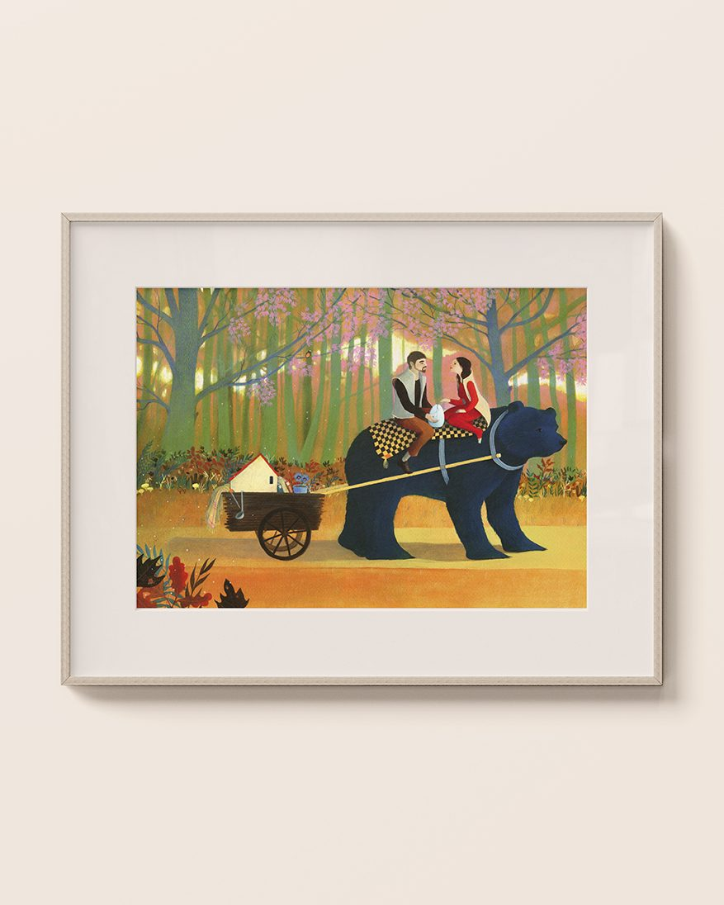
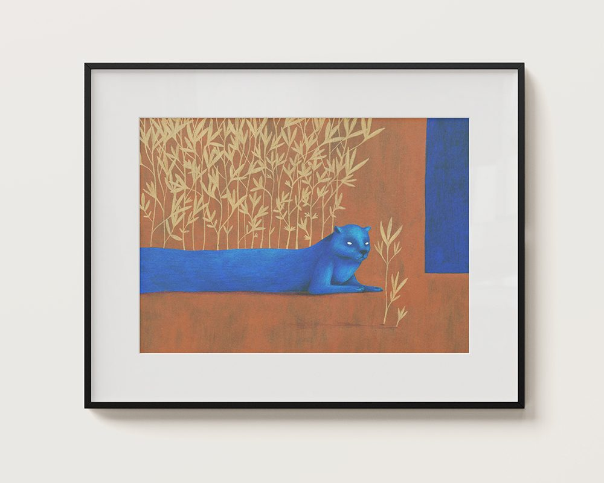
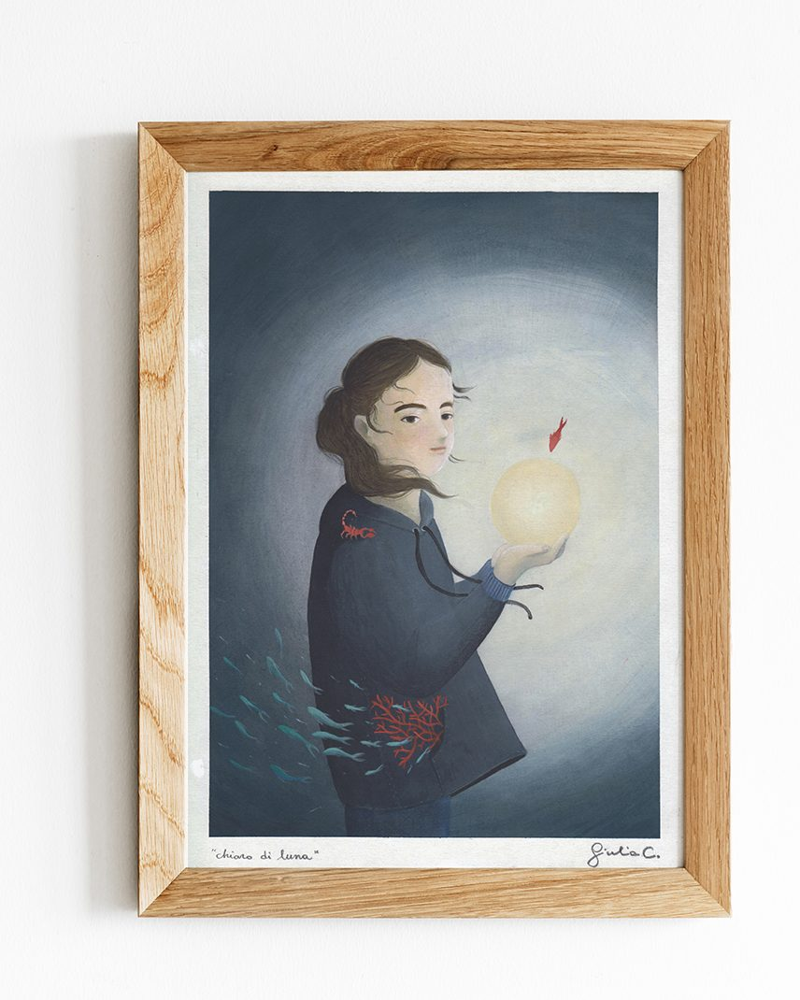
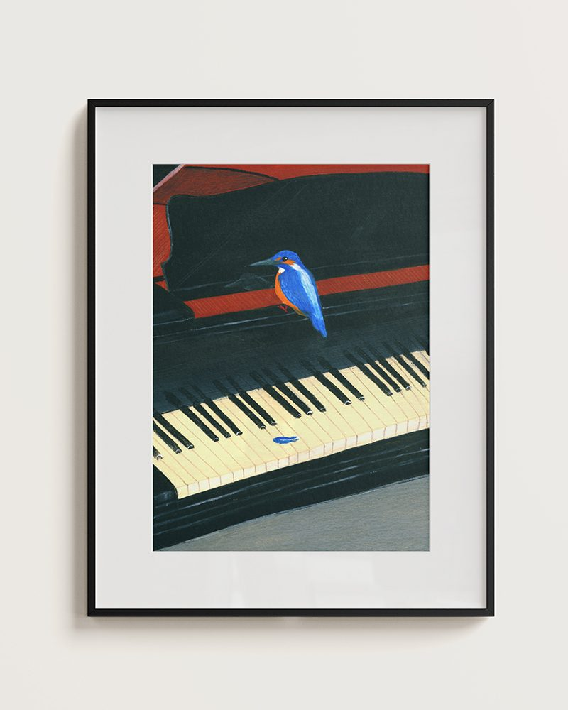

Trasformare una storia personale o di famiglia in una narrazione visiva unica. Questo ritratto surreale e poetico, racchiuso in una cornice, trasforma ricordi, passioni e legami in un viaggio fantastico, dove la realtà si fonde con la magia dell'illustrazione.


